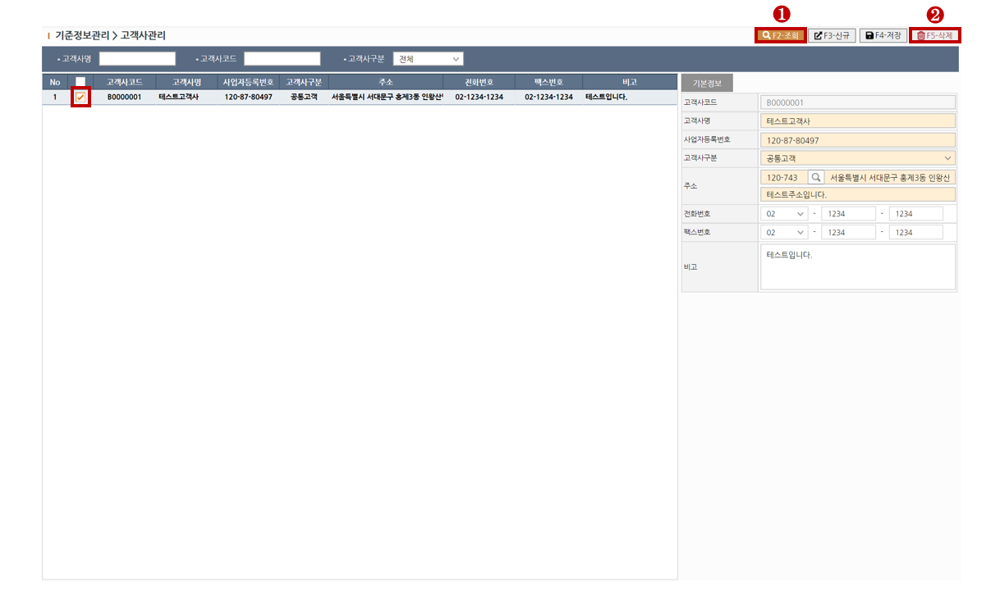

1. 신규 고객사 생성하기
> STEP-1 새로운 고객사 추가를 원하실 경우 상단의 신규(F3)버튼을 클릭하여 행을 추가합니다.
> STEP-2 고객사 기본정보를 입력합니다. 노란색필드는 필수입력입니다.
> STEP-3 기본정보입력을 완료하셨다면 상단의 저장(F4)버튼을 클릭하여 저장합니다.
※ 필드설명1 - 고객사코드
고객사코드는 저장시 자동발번됩니다.
※ 필드설명2 - 고객사구분
고객사 구분이 "공통고객" 또는 "배송고객"으로 등록된 경우 [고객사 상세관리]화면에 조회됩니다.
| 항목 |
설명 |
[공통고객] |
고객사가 화주이면서 배송도 담당하는경우
|
[창고고객] |
고객사가 화주인경우
|
[배송고객] |
고객사가 배송을 담당하는경우
|
2. 조회하기
> STEP-1 조회목록의 필터링을 원하실땐 조회조건을 입력합니다.
> STEP-2 상단의 조회(F2)버튼을 클릭하여 조회합니다.
3. 삭제하기
> STEP-1 상단의 조회(F2)버튼을 클릭하여 대상을 조회합니다.
> STEP-2 대상을 그리드에서 체크한뒤 상단의 삭제(F5)버튼을 클릭하여 대상을 삭제합니다.
